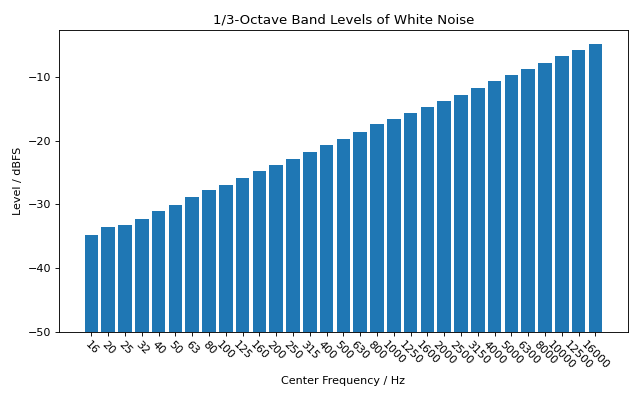

Signal Statistics and Levels
Some basic signal statistics are accessible through the
audiotoolbox.Signal.stats property. This includes the mean and
variance of the channels, calculated per channel. The library also provides
convenient methods for level calculations in various units.
Let’s create a pink noise signal and explore its properties:
>>> import audiotoolbox as audio
>>> import numpy as np
>>>
>>> noise = audio.Signal(n_channels=2, duration=1, fs=48000).add_noise('pink')
Basic Statistics
The mean and var (variance) are returned as Signal objects,
with one value per channel.
>>> # Get basic statistics
>>> print(f"Mean: {noise.stats.mean}")
Mean: Signal([-2.4e-17, -2.4e-17])
>>>
>>> print(f"Variance: {noise.stats.var}")
Variance: Signal([1., 1.])
Level in dB
The library provides properties to get the level in dB Full Scale (dBFS) and Sound Pressure Level (SPL), assuming the signal values represent pressure in Pascals. Frequency-weighted levels (A- and C-weighting) are also available.
>>> # Get level in dB Full Scale (dBFS)
>>> print(f"Level in dBFS: {noise.stats.dbfs}")
Level in dBFS: Signal([3.01, 3.01])
>>>
>>> # Get A-weighted and C-weighted levels
>>> print(f"A-weighted SPL: {noise.stats.dba}")
A-weighted SPL: Signal([89.10, 89.10])
>>>
>>> print(f"C-weighted SPL: {noise.stats.dbc}")
C-weighted SPL: Signal([90.82, 90.82])
You can also normalize a signal to a target Sound Pressure Level (SPL)
using the audiotoolbox.Signal.set_dbspl() method.
>>> # Normalize the signal to 70 dB SPL
>>> noise.set_dbspl(70)
>>>
>>> # The stats.dbspl property will now reflect this level
>>> noise.stats.dbspl
Signal([70., 70.])
Octave-Band Levels
It is also possible to get the octave-band or fractional-octave-band levels of a signal.
import audiotoolbox as audio
import numpy as np
import matplotlib.pyplot as plt
# Create a pink noise signal
noise = audio.Signal(1, duration=5, fs=48000).add_noise('white')
# Calculate octave-band levels
fc, levels = noise.stats.octave_band_levels(oct_fraction=3)
base_value = -50
# Plot the results
plt.figure(figsize=(8, 5))
plt.bar(np.arange(len(fc)), levels -base_value, tick_label=np.round(fc).astype(int), bottom=base_value)
# plt.bar(np.arange(len(fc)), levels, tick_label=np.round(fc).astype(int))
plt.title('1/3-Octave Band Levels of White Noise')
plt.xlabel('Center Frequency / Hz')
plt.ylabel('Level / dBFS')
plt.xticks(rotation=-45)
plt.tight_layout()
plt.show()
(Source code, png, hires.png, pdf)
{kind=link}
{kind=link}
